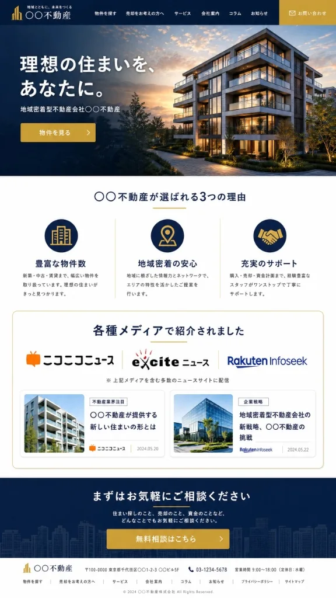
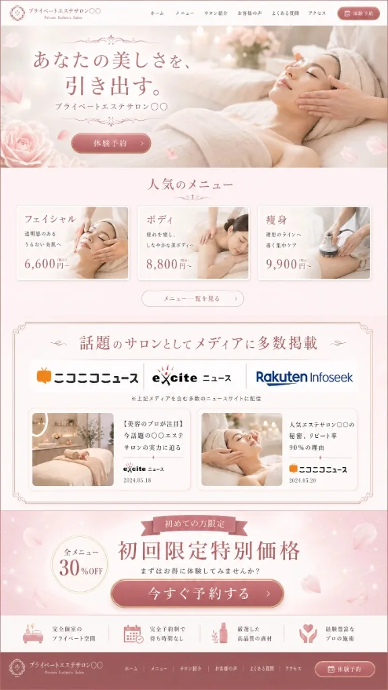
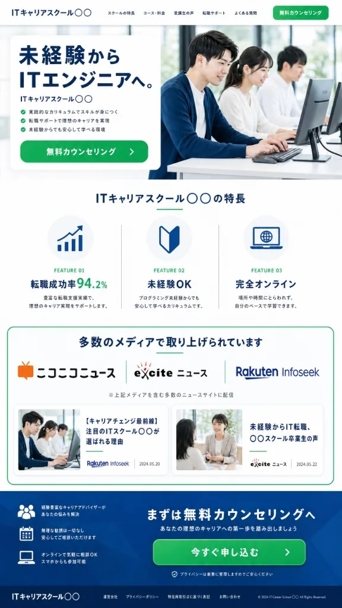
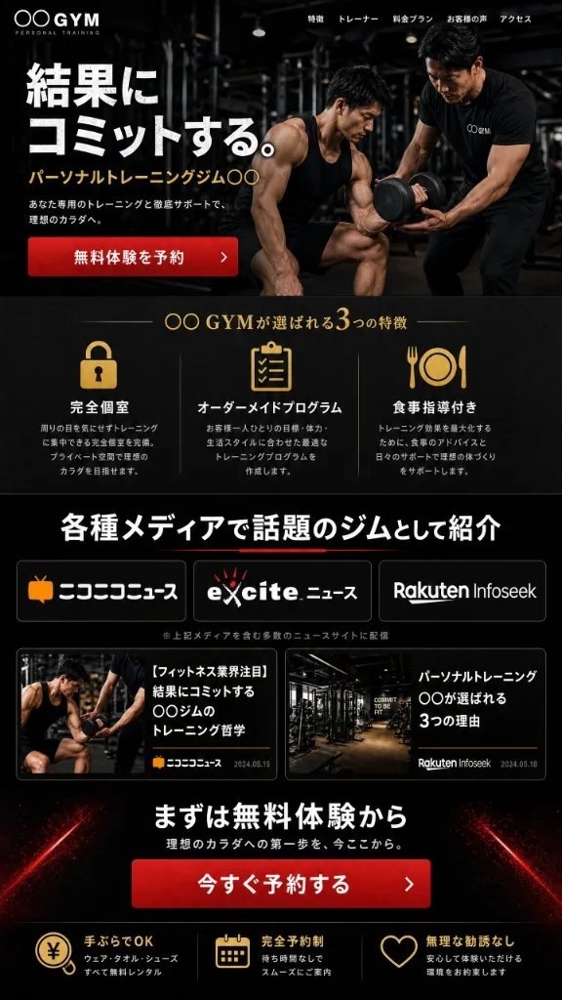
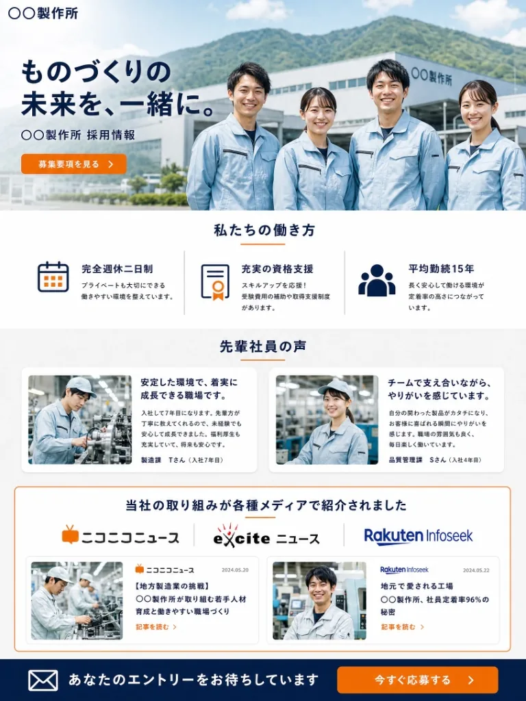

広告・SNS で認知されても、問い合わせが来ない。
自信のある商品 でも、契約が決まらない。
求人 を出しても、応募・内定承諾につながらない。
原因は集客や採用ではなく、信用情報の不足かもしれません。
見込み客も求職者も、必ず 「検索」 してから決めています。
検索した瞬間、信用材料が足りないと、こんなことが起きます。
商談・問い合わせ前
契約・購入の直前
応募・内定承諾の前
「ニュース掲載 × AI検索対応LP」をセットで設計。
問い合わせ率・契約率・採用応募率に直結させる、成果直結型のメディアブランディングです。
掲載がゴールではなく、
問い合わせ・契約・応募がゴール。
正式なニュース掲載で、他社と差をつける「第三者評価」を商談・面接前に見せられる状態をつくります。
代表の想い・職場のリアル・商品の価値を「取材記事 × LP」で可視化し、説得・信頼を生み出します。
掲載実績とAI検索対応LPをHP・営業資料・採用ページに組み込み、問い合わせ・契約・応募という成果へ直結させます。
成果直結型の最大の理由は、ニュース掲載 そのもの ではなく、
掲載後のHP・LPへの「成果設計」 にあります。
HP・LP・営業資料・SNSに掲載実績を組み込み、
迷っている見込み客や求職者に 「最後の一押し」 を届け、問い合わせ・契約・応募へと記見わせます。
たとえば、HPやLP上に以下のような形で掲載できます。
掲載 → HP・LP・採用LPへの組み込み → 信用補強 → 成果改善 までを一気通貫で設計。
導入企業では、問い合わせ率・契約率・採用応募率が改善したケースも多数あります。
改善実績
120%〜200%
導入可能
月々3万円台〜
幅広く対応
業種制限なし
※成果を保証するものではありません。業種・商材・LP内容・流入数・採用条件・営業導線等により効果は異なります。
購買・契約・採用、いずれの場面でも、
「大手メディアに取り上げられている」ことが、最終判断に大きな影響を与えています。
信用度が増す
大手メディアに取り上げられていると
判断材料になる
商品・業界比較の際に
「掲載されました」が決め手になる
比較検討時にメディア掲載が気になる
※出典：ランサーズ調べ／10〜40代 1,243名（男性633名・女性610名）
メディくるは、正式なニュース掲載だから、
取材されたインタビュー記事は
人にもAI検索にも、信用情報として参照されます。
プレスリリース = 「企業からのお知らせ」。
メディくる = 「第三者掲載実績」。
だからこそ 「信用訴求」 になります。
| 項目 | 一般的なプレスリリース | メディくる |
|---|---|---|
| 発信の見え方 | 企業からのお知らせ | 第三者メディアによるニュース掲載実績 |
| 主な内容 | 新商品・新規事業・イベント・キャンペーン | 会社の強み・商品価値・採用魅力・選ばれる理由 |
| LPでの活用 | ニュース欄やお知らせ欄が中心 | 「各種メディアで紹介」として信用訴求に活用 |
| 見込み客への効果 | 情報提供 | 不安解消・信用補強・問い合わせ後押し |
| 採用への効果 | 採用告知 | 求職者への安心材料・応募後押し |
| 強み | 告知性 | 第三者性・信頼性・ブランディング活用 |
実際に各業界の企業が、ニュース掲載実績を自社のHP・LP・採用ページに活用しているイメージです。

物件探しや売却相談は、信頼できる会社に任せたいもの。ニュース掲載実績をHPやLPに掲載することで、問い合わせ前の安心感を高めます。
各種メディアで紹介されました
地域密着型不動産会社としてニュース掲載

美容サロンやエステは、初めて利用するお客様にとって不安が大きいサービスです。メディア掲載実績をLPに載せることで、話題性や信頼性を伝えられます。
話題のサロンとしてメディアに多数掲載
美容のプロが注目するサロンとして紹介

スクール選びでは、実績や信頼性が重要です。ニュース掲載実績を活用することで、受講前の不安を減らし、無料相談やカウンセリングへの導線を強化できます。
多数のメディアで取り上げられています
未経験からキャリアチェンジを支援するスクールとして紹介

パーソナルジムやフィットネスサービスでは、結果への期待と同時に不安もあります。トレーニング哲学やサポート体制をニュース掲載として見せることで、選ばれる理由をつくります。
各種メディアで話題のジムとして紹介
結果にこだわるトレーニング方針がニュース掲載
BtoBサービスでは、導入前に企業の信頼性や実績が確認されます。ニュース掲載実績をLPに掲載することで、技術力・成長性・導入価値を伝えやすくなります。
各種ビジネスメディアで紹介されています
業務効率化を支援するサービスとして掲載

採用では、求人票だけでは会社の魅力が伝わりきりません。会社の取り組み、働き方、代表の想い、社員の魅力をニュース掲載として見せることで、求職者の安心材料になります。
当社の取り組みが各種メディアで紹介されました
若手育成・働きやすい職場づくりがニュース掲載
※ いずれもサイトのデザイントーンに合わせて自然に組み込まれており、「広告」ではなく「第三者からの信頼の証」として機能します。
大手ニュースメディアへの確実な掲載と、AI検索にもヒットする
特許技術内蔵LP制作までを、ワンストップで提供します。
企業・商品・採用 すべてに使える信用資産
広告で集めた見込み客に、最後に選ばれる信用を。
大手3メディア（exciteニュース・ニコニコニュース・Rakuten Infoseek）への確実な記事掲載と、AI検索にもヒットする特許技術内蔵LP制作をセットで。
掲載URLはHP・LP・営業資料・SNSへ二次利用可能です。
ニュース掲載に加えて、AI検索（ChatGPT・Gemini・Perplexity等）にヒットしやすい構造を持つ特許取得済みLPの制作までワンストップで提供。
"人にもAIにも見つけられる"状態を、追加費用なしで実現します。
正式な
ニュース掲載
特許技術
AI対応LP
AIにも人にも
選ばれる企業へ
プラン内容
向いている企業
主な活用先
| 提供価値 | 内容 |
|---|---|
| 信用力の強化 | 第三者メディア掲載により、企業の信頼性を高める |
| LPでの信用訴求 | 正式なニュース掲載をHP・LP・採用LPに掲載できる |
| 問い合わせ率向上への貢献 | 見込み客が問い合わせ前にメディア掲載実績を確認できる |
| 契約率向上への貢献 | 商談前後の比較検討時に信用材料として活用できる |
| 採用応募率向上への貢献 | 求職者が応募前に企業の取り組みや魅力を確認できる |
| 第三者評価としての訴求 | 自社発信ではなく、正式なニュース掲載として強みを打ち出せる |
| AI時代の情報整備 | AIや検索に参照されやすい企業情報をWeb上に蓄積する |
| デジタル資産化 | 記事・LPを継続活用できる資産にする |
企業の価値や魅力を正しく伝えることで、人と企業の出会い、集客、採用、事業成長を加速させます。
検索、SNS、口コミ、AIで企業が比較される時代に、顧客・求職者・取引先・AIから正しく認識され、選ばれる企業を増やしていきます。
企業の想い、強み、実績、人の魅力を、第三者メディア・AI検索対応LPを通じて見える資産に変えます。
現在のHP・LP・採用ページ、広告や採用活動の状況をお聞きします。
企業・商品・採用における強みや魅力を整理し、ニュース掲載で打ち出すテーマを設計します。
会社の強み、代表の想い、商品価値、採用魅力などをもとに、ニュース掲載用の原稿を作成します。
大手3メディアへのニュース掲載と、AI検索対応の特許技術LP制作を進行します。
掲載後は、HP・商品LP・採用LP・営業資料・求人媒体などに活用し、見込み客や求職者に見られる信用資産として展開します。
A. はい。BtoB・BtoCを問わず、不動産、美容、教育、士業、コンサル、建築、製造業、SaaS、店舗ビジネスなど幅広い業種に対応できます。営業・集客はもちろん、採用シーンでも活用可能です。
A. 会社HP、商品LP、採用LP、営業資料、SNS、求人媒体、スカウトメール、面接前案内、内定者フォローなどに活用できます。掲載して終わりではなく、見込み客や求職者に見てもらう導線づくりまで支援します。
A. 一般的なプレスリリースは企業からのお知らせとして発信されることが多いですが、メディくるでは企業の強みや魅力を第三者メディアによる正式なニュース掲載として打ち出せます。そのため、HPやLPで「各種メディアで紹介されました」と信用訴求しやすい点が特徴です。
A. ニュース掲載実績をHP・LP・採用LPに活用することで、見込み客や求職者の不安解消につながり、問い合わせ率・契約率・採用応募率の改善に貢献します。導入企業では120％〜200％程度改善したケースもありますが、成果は業種・商材・LP内容・流入数・採用条件などにより異なります。
A. はい。ニュース掲載コミットプランは月々3万円台からご利用いただけます。
※分割クレジット払いの場合
A. はい。まずは無料相談で、現在のHP・LP・採用ページに足りない信用材料を診断します。
ニュース掲載は枠が限られた特別なメディア露出です。
一社ごとに最適な取材設計・原稿作成・LP活用までを丁寧に行うため、
月にお受けできる社数を限定しています。
限定
枠が埋まり次第、翌月以降のご案内となります。お早めにご相談ください。
無料相談・お見積り・ご質問など、お気軽にお問い合わせください。